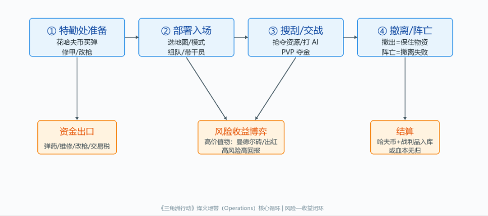

《三角洲行动》游戏拆解（数值策划视角）
拆解目标：为游戏数值策划岗位（网易雷火）申请材料准备一份结构化、可讲、可深挖的游戏分析底稿。 拆解立场：以「数值设计」为切口，而非泛泛的玩家评测。 配套文档： - 《三角洲行动_伤害计算与护甲机制详解.md》—— 武器伤害四层模型与护甲穿透 - 《三角洲行动_官方Wiki武器数值统计.md / .docx》—— 官方接口抓取的 50 把枪真实数值 - extract_deltaforce_weapons.py —— 可随版本重跑刷新的武器数据提取脚本
0. 一句话定位
《三角洲行动》（Delta Force）是腾讯天美 J3 工作室（琳琅天上 / Team Jade）用虚幻引擎打造的「多端互通战术射击 GaaS」，把 Tarkov 式的硬核搜打撤、Battlefield 式的大战场、以及带职业技能的干员体系三个维度揉进同一个免费长线运营产品里。
它的核心赌注是：用「搜打撤」抓硬核 FPS 用户，用「大战场」和「干员技能」降门槛抓泛用户，再用「全平台 + 全自控 IP」做长线收入。
1. 产品定位与市场
| 维度 | 内容 |
| 研发 | 腾讯天美工作室群 J3 工作室（琳琅天上团队），对外代号 Team Jade |
| 发行 | 国内腾讯；海外 Level Infinite；SEA/MENA/LATAM 由 Garena 代理 |
| 引擎 | 战役用 UE5；多人联网用 UE4（官方路线图：2026 H2 计划整体迁移 UE5） |
| 反作弊 | ACE（Anti-Cheat Expert），内核级 Ring 0，上线初期因卸载残留、与其他反作弊冲突引发争议 |
| 上线时间线 | 2024-09-26 国服公测（PC+移动）→ 2024-12-05 全球 PC（Steam 非删档）→ 2025-02-21「黑鹰坠落」战役 PC DLC → 2025-04-22 全球手游 → 2025-08-19 PS5 / Xbox Series X\ |
| 战略标签 | 腾讯首个「四全」IP：全球化发行、全终端上线、全平台打通、全自控 IP（无 IP 授权费、分成自由） |
| 规模 | 国内 DAU 峰值 2025-04 破 1200 万、2025-07 破 2000 万、2025-09 破 3000 万；Steam 同屏峰值 2025-09 约 24.7 万、2026-06 约 11–12 万；全球手游上线首 4 日注册破千万，登顶 169 国 App Store 免费榜 |
| 商业表现 | 2025Q2 财报 DAU 环比 +66% 至 2000 万+，流水前三；S6 赛季 + 周年庆（2025-09）收入环比 +76% |
数策视角解读：
「四全」本质是成本结构与可控性问题——自控 IP 意味着数值/商业化调整不受授权方掣肘，能「两个月一次体系化版本迭代」。对数值策划而言，这意味着你调的数值会高频、直接地进入生产环境，迭代节奏远快于买断制 3A。
DAU 曲线（1200→2000→3000 万）说明它不是「上线即巅峰」的买量型产品，而是靠赛季内容 + 模式广度吃了长尾。数值策划要服务的是长线留存曲线，而非首发爆量。
2. 核心玩法循环
游戏有三条并行的「循环」，但真正吃数值深度的是「烽火地带」的搜打撤循环，因为它把 FPS 对枪、RPG 养成、经济系统三套数值拧在一起。
2.1 烽火地带（Operations / 搜打撤）核心循环

这条循环的数值骨架是「风险—收益曲线」：
进场成本（装备/弹药/维修）是固定支出，撤离收益是带方差的随机变量（爆率、物品价值分布），死亡惩罚是「失去本局所有非保险物资」。这正是搜打撤品类最考验数值策划的地方——入口（掉落/任务产出）与出口（消耗/税收）如何配平以控制通胀。
2.2 全面战场（Warfare）循环
典型「占点 + 载具 + 32v32」大战场循环：复活 → 推进/占点 → 死亡复活。数值重点是载具强度、占点节奏、单局时长、击杀反馈，没有 persistence 经济。
3. 二模式架构对比
| 维度 | 烽火地带 (Operations) | 全面战场 (Warfare) |
| 玩法内核 | 搜打撤（Extraction） | 大战场占点（Battlefield-like） |
| 队伍 | 3 人小队 | 32 v 32 |
| 经济系统 | 有（哈夫币、物资持久化） | 无 |
| 护甲系统 | 有护甲耐久（破损/维修） | 无护甲耐久（公式退化） |
| 载具 | 少量（直升机支援等） | 大量（坦克/直升机/艇） |
| 干员技能 | 全生效 | 全生效 |
| 数值深度 | ★★★★★（最复杂） | ★★★（对抗平衡） |
| 长线运营权重 | 最高（圈钱主力） | 中（被玩家吐槽「放养」） |
数策关键洞察：同一个「武器伤害」在两种模式里走了两套结算公式。烽火地带的护甲耐久系统让伤害公式变成「四层」（命中→基础肉伤×部位×距离→护甲判定渗漏→结算）；大战场没有护甲耐久，公式退化为「三层」。
这意味着同一把枪的 TTK 感知在两种模式里完全不同——这是双模式产品必须面对的数值分裂。
4. 系统拆解
4.1 干员系统（4 职业 × 14+ 干员）
玩家扮演全球反恐特勤组 G.T.I. 的精英干员，对抗 哈夫克（Havoc）公司；部分干员属阿萨拉阵营（如比特）。
| 职业 | 定位 | 代表干员 | 技能数值维度 |
| 突击 | 灵活突破/收割，多段位移，抓TIMING能力强 | 红狼、威龙、无名、疾风 | 位移速度、技能 CD、爆发窗口、击杀刷新技能 |
| 侦察 | 信息获取、压制/控场 | 露娜、银翼、骇爪、回响 | 标记范围/时长、侦测半径、干扰强度 |
| 支援 | 续航/救援 | 蜂医、蝶、蛊 | 治疗量/治疗速率、救援速度倍率、负面状态清除 |
| 工程 | 防御/控场 | 牧羊人、深蓝、乌鲁鲁、比特、液氮 | 减益强度（如声波减射速）、护盾减伤、陷阱 CD |
数策视角：干员技能是「基本枪械数值之外的第二套强度轴」。设计难点在于——技能强度不能与枪械 TTK 失衡。例如蜂医激素枪的治疗量若过高，会让「对枪劣势」被「续航优势」抹平；牧羊人声波减敌方射速的比例若过大，会让工程位变成「软控王」。这类数值需要独立的平衡预算（budget），和武器数值解耦调参。
4.2 武器系统（我们已抓真值）
官方 Wiki 接口可抓到全部武器基础数值，具体见附表中提取了 50 把枪的精确数值。
按 7 大类分布：突击步枪 17 / DMR 射手 7 / 冲锋枪 9 / 狙击 4 / 轻机 3 / 霰弹 3 / 手枪 7。
每把枪的数值字段（官方字段名）：
meatHarm 肉伤（=界面「基础伤害」，打无甲躯干单发）
armorHarm 甲伤（打有甲部位扣护甲耐久）
fireSpeed 射速（RPM）
shootDistance 优势射程
muzzleVelocity 初速
capacity 弹容；recoil/control/stable/hipShot 后坐/操控/稳定/腰射
caliber 口径；ammo[] 可用弹药；fireMode 射击模式
此外，横向榜单（肉伤 TOP10 / 理论 DPS TOP10 / 射速 TOP10）已在文档中给出。
4.3 护甲 / 装备系统
烽火地带：护甲有耐久，穿戴后提供减伤，被甲伤打中扣耐久，耐久归零失效，需维修。
护甲分级+ 弹药穿甲分级 → 决定「肉伤渗漏率」。
这部分官方只公开肉伤/甲伤，未公开部位倍率、穿甲渗漏率、距离衰减系数的精确公式——是社区实测补的近似模型。
4.4 经济系统（烽火地带核心）
| 要素 | 说明 | 数策关注点 |
| 哈夫币 | 游戏内通用货币 | 入口（掉落/任务）vs 出口（弹药/维修/交易税）配平 |
| 曼德尔砖 / 大红（非洲之心等） | 高价值可带出物品 | 风险收益曲线的「高尾」设计 |
| 保险箱 / 保险机制 | 部分物资死亡可保留 | 死亡惩罚的「缓冲系数」 |
| 交易行 | 玩家间交易，带税（玩家反馈约 15%） | 税收率直接影响流通与通胀 |
| 黑屋 | 行为分匹配（击杀多/死多/撤离多进「黑屋」） | 匹配算法的行为权重设计 |
4.5 进度 / 养成
干员解锁（活动/通行证）、武器改装（配件树）、赛季通行证、战令。
改装系统 = 配件对基础数值的乘区/加区设计（后坐、操控、射程、初速等），是武器数值的「二阶调参面」。
5. 数值设计维度（重点章）
5.1 武器 TTK 框架
TTK（击杀耗时）≈ 敌方有效血量 / (单发肉伤 × 射速/60 × 命中率)。但烽火地带里「有效血量」被护甲耐久和渗漏率扭曲，所以真实 TTK 是：
TTK = 破甲耗时(甲伤/护甲耐久) + 破甲后进血耗时(剩余血 / 渗漏后肉伤 / 射速)
同一把枪打无甲 vs 打六级甲，击杀发数可差 2–3 倍。这是《三角洲》区别于纯对抗 FPS 的核心数值张力。
5.2 护甲穿透 / 渗漏模型（近似）
由「弹药穿甲等级 − 护甲防护等级」决定肉伤渗漏率（社区实测近似）：
弹 ≥ 甲 +1 级 → 渗漏 ~90–100%
同级 → ~70–85%
低 1 级 → ~40–60%
低 2 级 → ~20–35%
官方未公开精确系数，是数值策划上岗后要自己建表、用实战数据校准的黑盒。
5.3 经济数值（最易被玩家感知、也最易翻车）
搜打撤品类的经济数值决定了「肝度」和「贫富分化」：
通胀控制：哈夫币的产出（掉落/任务/卖货）必须 < 消耗（弹药/维修/税），否则货币贬值、老玩家资产膨胀。玩家反馈已出现「有钱的越来越有钱，穷的越来越穷」的抱怨——这是经济数值失衡的典型信号。
爆率曲线：高价值物（红货/机密）的爆率决定「赌徒盘」吸引力，但断崖式下调会直接伤留存（玩家大量差评指向爆率下滑）。
交易税：既是通胀阀门也是「劝退税」，税率是杠杆。
5.4 技能 / 匹配数值
干员技能 CD、减益强度需要独立的「强度预算」。
匹配：除 ELO/MMR 外，还叠加行为分（击杀/死亡/撤离频率）做分池（黑屋）。这是用数值手段调控生态，但权重设计争议极大（玩家吐槽「杀多了进黑屋」），是数策在「生态治理」上的经典难题。
5.5 平衡性方法论
官方公开表述「结合全赛季大数据，对数十款主流枪械的属性、后坐力、适配场景优化，平衡强势枪械出场率，盘活冷门枪」——这是数据驱动平衡（出场率 / 胜率 / TTK 分布） 的标准范式，也是数值策划的日常工具链。
6. 竞品对比
| 产品 | 搜打撤 | 大战场 | 干员技能 | 引擎/平台 | 与三角洲差异 |
| 三角洲行动 | ✅ 烽火地带 | ✅ 32v32 | ✅ 4 职业 | UE4/5 全平台 | 三合一综合体 |
| Escape from Tarkov | ✅ 硬核 | ❌ | ❌ | 自研 PC | 无技能/无大战场，学习曲线陡 |
| 暗区突围 / Arena Breakout | ✅ 手游向 | ❌ | ❌ | 移动端 | 腾讯已验证的手游搜打撤，轻量化 |
| Battlefield 战地 | ❌ | ✅ 载具大战场 | ❌ | 多平台 | 无 persistence 经济 |
| COD DMZ | ✅ 偏娱乐 | ❌ | 部分 | 多平台 | 搜打撤但更休闲、无长线养成 |
| Valorant / apex 类 | ❌ | ✅ 小队对抗 | ✅（英雄） | PC | 技能驱动但无搜打撤经济 |
结论：三角洲的护城河是「搜打撤的经济深度 + 大战场的低门槛流量 + 干员技能的信息/控制维度」三件套，且全平台打通把用户盘子做大。代价是三套数值体系要分别平衡且不能互相污染（尤其烽火地带 vs 大战场的护甲公式分裂）。
7. 数值策划视角洞察（给面试/作品集的「主见」）
双模式双护甲公式是最大设计挑战：同一武器在烽火地带（有甲耐久）和大战场（无甲耐久）走不同结算，TTK 感知割裂。理想的数值框架应有一套「统一底层 + 模式开关」，避免两套独立平衡互相打架。
经济数值是留存命门：搜打撤的「入口—出口」配平决定贫富分化。玩家已明确抱怨通胀与爆率下滑——这是数值策划最该建立监控仪表盘（哈夫币流通量、人均资产、红货掉率、交易行换手率）的地方。
伤害黑盒要自己建表：官方只给肉伤/甲伤，部位倍率、渗漏率、距离衰减需社区/内部实测校准。上岗第一件事应是搭一套可复现的伤害测算沙盒。
技能强度要独立预算：干员技能是「第二强度轴」，必须和武器 TTK 解耦调参，否则会出现「技能碾压枪法」的失衡。
行为分匹配是双刃剑：黑屋机制初衷是生态治理，但权重过激会反噬核心玩家体验。匹配算法里行为权重需要 AB 实验谨慎标定。
数据驱动平衡是常态：出场率/胜率/TTK 分布三张表是枪械平衡的日常工作，我们已有的 50 枪真实数值可直接作为这套监控的「基线快照」。
8. 数据来源与可复用资产
官方 Wiki 接口（已逆向）：projectd_oversea/object.list + i18n 语言表，可随版本重跑 extract_deltaforce_weapons.py 刷新 50 枪数值。
真实数值基线：见《三角洲行动_官方Wiki武器数值统计.md / .docx》。
伤害模型：见《三角洲行动_伤害计算与护甲机制详解.md》（含 AS Val 四场景算例）。
市场/规模数据：腾讯财报、WeGame 商店页、SteamDB / PlayerAUctions、百度百科、官方赛季页（第三方报道已注明出处，正式作品集中建议二次核验最新赛季号与 DAU）。
⚠️ 注：赛季编号、DAU 峰值等运营数据随时间变化较快，本文引用均标注来源性质；正式投递前建议用最新官方财报/公告复核。
附表：
三角洲行动 · 武器数值统计
数据来源：官方 Wiki 后端接口 projectd_oversea/object.list ｜ 全 50 把武器
突击步枪（17 把）
| 武器 | 口径 | 肉伤 | 甲伤 | 射速 | 射程 | 初速 | 弹容 | 后坐 | 操控 | 稳定 | 腰射 |
| ASh-12战斗步枪 | 12.7x55mm | 56 | 55 | 500 | 55 | 340 | 20 | 24 | 52 | 61 | 43 |
| AKM突击步枪 | 7.62x39mm | 40 | 42 | 600 | 40 | 525 | 30 | 39 | 54 | 55 | 53 |
| M7战斗步枪 | 6.8x51mm | 40 | 42 | 649 | 55 | 630 | 20 | 34 | 55 | 58 | 47 |
| SCAR-H战斗步枪 | 7.62x51mm | 40 | 38 | 585 | 40 | 630 | 20 | 40 | 58 | 55 | 45 |
| G3战斗步枪 | 7.62x51mm | 39 | 42 | 533 | 55 | 630 | 20 | 32 | 51 | 62 | 45 |
| 191式突击步枪 | 5.8x42mm | 35 | 38 | 706 | 27 | 550 | 30 | 42 | 60 | 50 | 56 |
| AKS-74U突击步枪 | 5.45x39mm | 34 | 36 | 533 | 40 | 500 | 20 | 35 | 60 | 53 | 52 |
| PTR-32突击步枪 | 7.62x39mm | 34 | 36 | 632 | 40 | 630 | 30 | 32 | 56 | 57 | 45 |
| M16A4突击步枪 | 5.56x45mm | 33 | 39 | 672 | 55 | 575 | 20 | 40 | 56 | 57 | 54 |
| K416突击步枪 | 5.56x45mm | 29 | 32 | 880 | 27 | 575 | 30 | 44 | 61 | 52 | 57 |
| AUG突击步枪 | 5.56x45mm | 29 | 35 | 679 | 55 | 575 | 30 | 60 | 54 | 59 | 53 |
| AS Val突击步枪 | 9x39mm | 29 | 48 | 972 | 27 | 330 | 15 | 43 | 62 | 51 | 57 |
| M4A1突击步枪 | 5.56x45mm | 27 | 32 | 800 | 40 | 575 | 30 | 41 | 58 | 55 | 55 |
| QBZ95-1突击步枪 | 5.8x42mm | 27 | 42 | 679 | 55 | 575 | 30 | 52 | 55 | 58 | 54 |
| AK-12突击步枪 | 5.45x39mm | 27 | 41 | 735 | 40 | 575 | 30 | 48 | 57 | 56 | 54 |
| CAR-15突击步枪 | 5.56x45mm | 27 | 32 | 632 | 40 | 575 | 20 | 50 | 58 | 55 | 53 |
| SG552突击步枪 | 5.56x45mm | 22 | 30 | 906 | 55 | 575 | 20 | 46 | 61 | 52 | 53 |
射手步枪(DMR)（7 把）
| 武器 | 口径 | 肉伤 | 甲伤 | 射速 | 射程 | 初速 | 弹容 | 后坐 | 操控 | 稳定 | 腰射 |
| SVD狙击步枪 | 7.62x54R | 56 | 52 | 300 | 70 | 500 | 10 | 42 | 48 | 67 | 34 |
| SR-25射手步枪 | 7.62x51mm | 50 | 55 | 364 | 90 | 550 | 10 | 56 | 56 | 59 | 40 |
| PSG-1射手步枪 | 7.62x51mm | 50 | 55 | 300 | 90 | 750 | 10 | 60 | 49 | 66 | 34 |
| SKS射手步枪 | 7.62x39mm | 44 | 42 | 510 | 55 | 575 | 10 | 30 | 55 | 60 | 38 |
| M14射手步枪 | 7.62x51mm | 40 | 41 | 727 | 40 | 575 | 10 | 26 | 58 | 55 | 48 |
| VSS射手步枪 | 9x39mm | 35 | 48 | 480 | 120 | 330 | 15 | 46 | 54 | 61 | 38 |
| Mini-14射手步枪 | 5.56x45mm | 32 | 38 | 590 | 90 | 650 | 10 | 60 | 52 | 63 | 37 |
狙击步枪（4 把）
| 武器 | 口径 | 肉伤 | 甲伤 | 射速 | 射程 | 初速 | 弹容 | 后坐 | 操控 | 稳定 | 腰射 |
| AWM狙击步枪 | .338 LM | 100 | 10 | 35 | 200 | 750 | 5 | 20 | 44 | 74 | 23 |
| SV-98狙击步枪 | 7.62x54R | 55 | 53 | 40 | 150 | 650 | 7 | 55 | 44 | 74 | 26 |
| R93狙击步枪 | 7.62x51mm | 55 | 53 | 50 | 150 | 550 | 10 | 55 | 52 | 66 | 28 |
| M700狙击步枪 | 7.62x51mm | 55 | 53 | 48 | 150 | 650 | 5 | 24 | 48 | 70 | 27 |
冲锋枪（9 把）
| 武器 | 口径 | 肉伤 | 甲伤 | 射速 | 射程 | 初速 | 弹容 | 后坐 | 操控 | 稳定 | 腰射 |
| SR-3M紧凑型突击步枪 | 9x39mm | 36 | 48 | 747 | 19 | 330 | 15 | 45 | 68 | 43 | 68 |
| 勇士冲锋枪 | 9x19mm | 36 | 35 | 700 | 20 | 500 | 30 | 40 | 63 | 48 | 67 |
| SMG-45冲锋枪 | .45 ACP | 35 | 40 | 605 | 27 | 500 | 25 | 52 | 70 | 41 | 65 |
| P90冲锋枪 | 5.7x28mm | 32 | 35 | 898 | 20 | 450 | 50 | 48 | 56 | 45 | 60 |
| Vector冲锋枪 | .45 ACP | 32 | 28 | 1091 | 20 | 500 | 17 | 38 | 69 | 42 | 68 |
| 野牛冲锋枪 | 9x19mm | 32 | 35 | 659 | 20 | 500 | 32 | 43 | 62 | 49 | 63 |
| MP5冲锋枪 | 9x19mm | 30 | 32 | 820 | 20 | 450 | 30 | 53 | 66 | 45 | 68 |
| MP7 | 4.6x30mm | 29 | 27 | 950 | 20 | 450 | 20 | 55 | 67 | 44 | 68 |
| UZI冲锋枪 | 9x19mm | 28 | 35 | 780 | 20 | 450 | 25 | 50 | 68 | 43 | 66 |
轻机枪（3 把）
| 武器 | 口径 | 肉伤 | 甲伤 | 射速 | 射程 | 初速 | 弹容 | 后坐 | 操控 | 稳定 | 腰射 |
| M250通用机枪 | 6.8x51mm | 55 | 53 | 550 | 40 | 600 | 125 | 45 | 38 | 50 | 55 |
| PKM通用机枪 | 7.62x54R | 45 | 42 | 669 | 40 | 630 | 75 | 36 | 42 | 59 | 45 |
| M249轻机枪 | 5.56x45mm | 30 | 38 | 858 | 40 | 575 | 100 | 44 | 47 | 55 | 48 |
霰弹枪（3 把）
| 武器 | 口径 | 肉伤 | 甲伤 | 射速 | 射程 | 初速 | 弹容 | 后坐 | 操控 | 稳定 | 腰射 |
| M1014霰弹枪 | 12 Gauge | 14 | 16 | 261 | 12 | 450 | 7 | 28 | 53 | 45 | 52 |
| M870霰弹枪 | 12 Gauge | 14 | 16 | 74 | 12 | 400 | 6 | 26 | 57 | 41 | 49 |
| S12K霰弹枪 | 12 Gauge | 13 | 16 | 300 | 10 | 300 | 5 | 36 | 49 | 49 | 48 |
手枪（7 把）
| 武器 | 口径 | 肉伤 | 甲伤 | 射速 | 射程 | 初速 | 弹容 | 后坐 | 操控 | 稳定 | 腰射 |
| .357左轮 | .357 Magnum | 56 | 39 | 182 | 35 | 340 | 6 | 34 | 62 | 43 | 65 |
| 沙漠之鹰 | .50 AE | 50 | 34 | 207 | 35 | 340 | 7 | 40 | 66 | 39 | 71 |
| M1911 | .45 ACP | 40 | 30 | 373 | 15 | 400 | 7 | 39 | 65 | 40 | 67 |
| QSZ92G | 9x19mm | 34 | 32 | 375 | 27 | 400 | 15 | 55 | 64 | 41 | 77 |
| 93R | 9x19mm | 34 | 32 | 672 | 22 | 400 | 12 | 44 | 67 | 38 | 78 |
| G17 | 9x19mm | 27 | 25 | 462 | 27 | 400 | 17 | 42 | 70 | 35 | 75 |
| G18 | 9x19mm | 22 | 16 | 1172 | 10 | 400 | 17 | 30 | 62 | 43 | 67 |
关键榜单
单发肉伤 TOP 10
| 排名 | 武器 | 类别 | 肉伤 | 甲伤 |
| 1 | AWM狙击步枪 | 狙击步枪 | 100 | 10 |
| 2 | ASh-12战斗步枪 | 突击步枪 | 56 | 55 |
| 3 | SVD狙击步枪 | 射手步枪(DMR) | 56 | 52 |
| 4 | .357左轮 | 手枪 | 56 | 39 |
| 5 | M250通用机枪 | 轻机枪 | 55 | 53 |
| 6 | SV-98狙击步枪 | 狙击步枪 | 55 | 53 |
| 7 | R93狙击步枪 | 狙击步枪 | 55 | 53 |
| 8 | M700狙击步枪 | 狙击步枪 | 55 | 53 |
| 9 | SR-25射手步枪 | 射手步枪(DMR) | 50 | 55 |
| 10 | PSG-1射手步枪 | 射手步枪(DMR) | 50 | 55 |
自动武器 理论DPS TOP 10（肉伤×射速/60，无甲躯干）
| 排名 | 武器 | 类别 | 肉伤 | 射速 | DPS |
| 1 | Vector冲锋枪 | 冲锋枪 | 32 | 1091 | 582 |
| 2 | M250通用机枪 | 轻机枪 | 55 | 550 | 504 |
| 3 | PKM通用机枪 | 轻机枪 | 45 | 669 | 502 |
| 4 | M14射手步枪 | 射手步枪(DMR) | 40 | 727 | 485 |
| 5 | P90冲锋枪 | 冲锋枪 | 32 | 898 | 479 |
| 6 | AS Val突击步枪 | 突击步枪 | 29 | 972 | 470 |
| 7 | ASh-12战斗步枪 | 突击步枪 | 56 | 500 | 467 |
| 8 | MP7 | 冲锋枪 | 29 | 950 | 459 |
| 9 | SR-3M紧凑型突击步枪 | 冲锋枪 | 36 | 747 | 448 |
| 10 | M7战斗步枪 | 突击步枪 | 40 | 649 | 433 |
射速 TOP 10
| 排名 | 武器 | 类别 | 射速 | 肉伤 |
| 1 | G18 | 手枪 | 1172 | 22 |
| 2 | Vector冲锋枪 | 冲锋枪 | 1091 | 32 |
| 3 | AS Val突击步枪 | 突击步枪 | 972 | 29 |
| 4 | MP7 | 冲锋枪 | 950 | 29 |
| 5 | SG552突击步枪 | 突击步枪 | 906 | 22 |
| 6 | P90冲锋枪 | 冲锋枪 | 898 | 32 |
| 7 | K416突击步枪 | 突击步枪 | 880 | 29 |
| 8 | M249轻机枪 | 轻机枪 | 858 | 30 |
| 9 | MP5冲锋枪 | 冲锋枪 | 820 | 30 |
| 10 | M4A1突击步枪 | 突击步枪 | 800 | 27 |
说明：以上为官方公开面板数值，代表基础裸枪属性（未含配件）。“肉伤”为对无甲躯干的单发伤害；对有甲部位的实际穿透伤害由弹药穿甲等级与护甲等级决定，详见《伤害计算与护甲机制详解》。“理论DPS”仅按 肉伤×射速 估算，未计后坐力、爆头倍率与距离衰减，仅供横向排序参考。